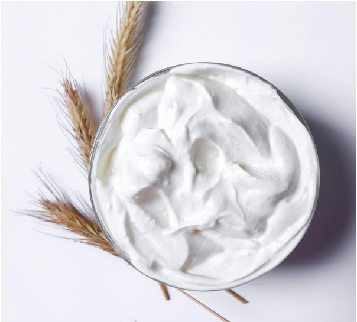

Yogurt Greek คืออะไร?
Greek Yogurt คือ โยเกิร์ตประเภทหนึ่งที่ได้รับความนิยม โดยมีส่วนประกอบหลัก ๆ คือ นม และ แบคทีเรียที่ดีต่อร่างกาย เหมือนกับโยเกิร์ตทั่ว ๆ ไป แต่สิ่งที่ทำให้กรีกโยเกิร์ต แตกต่างจากโยเกิร์ตปกติก็คือ “ความเข้มข้น” ที่มากกว่าโยเกิร์ตทั่วไปมาก ๆ มากจนเนื้อโยเกิร์ตอาจจะแข็งตัวจนเป็นก้อนเลยก็ได้! ซึ่งความเข้มข้นที่เป็นจุดเด่นของกรีกโยเกิร์ต เกิดจากการกรองและคั้นหางโยเกิร์ต เวย์ หรือของเหลว ที่ประกอบด้วยโปรตีน รวมถึงน้ำตาลแลคโตส ออกไปจนเกือบหมดนั่นเอง

|